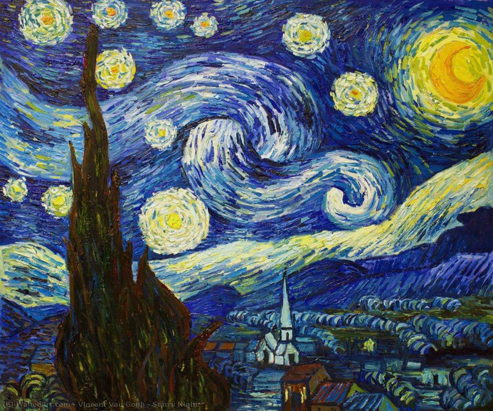
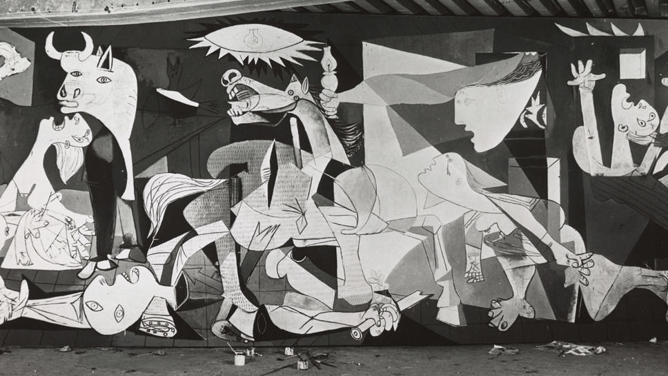
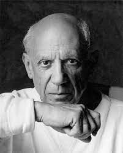
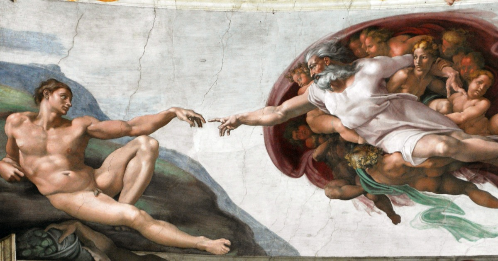
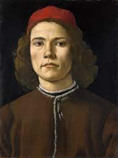
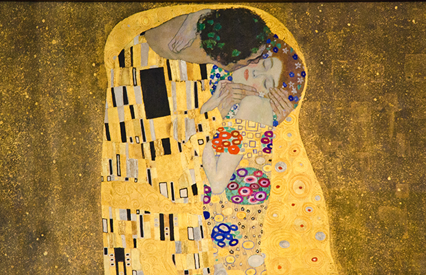
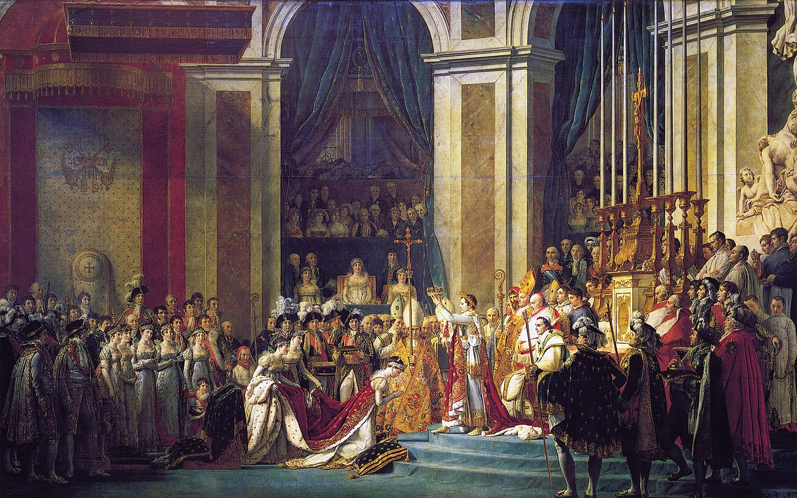
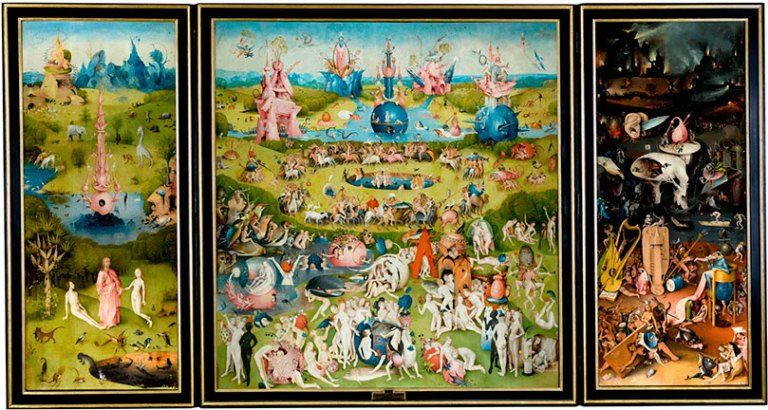
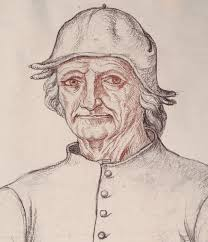

Obra |
Foto |
Artista |
Auto Retrato |
Tipo |
Ano |
País |
Movimento |
|---|---|---|---|---|---|---|---|
| A Noite Estrelada |  | Van Gogh |

|
Óleo sobre tela | 1889 | Holanda | Pós-Impressionismo |
| Guernica |  | Pablo Picasso |  | Óleo sobre tela | 1937 | Espanha | Cubimo, Surrealismo |
| A Criação de Adão e Eva |  | Michelangelo |

|
Fresco | 1508 | Vaticano | Alta Renascença |
| O Nascimento de Vênus |

|
Sandro Botticelli |  | Têmpera magra | 1484 | Itália | Renascença |
| O Beijo |  | Gustav Klimt |

|
Quadro | 1908 | Austria | Simbolismo |
| O Coração de Napoleão |  | Jacques Louis David |

|
Óleo sobre tela | 1807 | França | Neoclássico |
| O Jardim das Delícias Terrenas |  | Hieronymus Bosch |  | Arte Sacra | 1494 | Espanha | Tríptico |